About Me
Experience Timeline


Experience Timeline
Saya memulai karier desain pada tahun 2022 setelah berpindah dari dunia F&B. Karier desain saya dimulai sebagai UI/UX designer kontrak di PT Aksesindo Semesta Nusantara. Setelah menyelesaikan kontrak, saya mulai terjun sebagai freelancer dan mendapat klien pertama untuk website jasa plumbing, yang kemudian mempercayakan proyek lanjutan.
Di tahun 2024, saya bekerja fulltime sebagai graphic designer sambil tetap menerima proyek desain dan website. Salah satu pengalaman berkesan adalah ketika saya mendapat kesempatan mengerjakan proposal design website untuk agensi https://getextra.co.uk/
Tahun 2025 saya fokus membangun website dengan pendekatan UI/UX dan WordPress, termasuk proyek besar seperti Mads Billboard. Kini saya terus mengembangkan kemampuan desain, membangun relasi dengan klien baru, dan terbuka untuk kolaborasi di berbagai proyek desain dan web development.
Lebih dari 20 Client merasa puas setelah order. Ternyata ini alasan mereka

Agustus 2022 – Agustus 2023
Menyusun layout halaman interaktif, menjaga brand consistency, bekerja sama dengan developer, desain Figma & slicing Bootstrap 4, serta mengelola database via PhpMyAdmin.
Lihat PortofolioAgustus 2022 – Agustus 2023
Juli 2024 – Maret 2024
Membuat konten sosial media, landing page, template promosi, banner booth, motion graphic dan video editing untuk branding produk F&B.
Lihat PortofolioJuli 2024 – Maret 2024
UI/UX Design • Sept 2023 – Okt 2023
Website digunakan untuk mempromosikan jasa plumbing dengan desain responsif.
Design & Build Web • Okt 2023 – Des 2023
Website digunakan untuk mempromosikan jasa plumbing dengan desain responsif.
Design & Build Web • Des 2023 – Jan 2024
Website digunakan untuk mempromosikan jasa car detailing dengan desain responsif.
UI/UX Design • Feb 2024 – Maret 2024
Website digunakan untuk mempromosikan jasa training secara online.
UI/UX Design • Aug 2024 – Sept 2024
Website digunakan untuk mempromosikan jasa kelistrikan dengan desain modern.
UI/UX Design • Sept 2024 – Okt 2024
Menampilkan layanan, contact form 24/7, form pemesanan dan desain responsif.
UI/UX Design • Nov 2023 – Jan 2024
Website digunakan untuk mempromosikan jasa pelatihan dan sertifikasi online.
Design & Build WP • Maret 2025 – Mei 2025
Website digunakan untuk promosi media iklan digital dan booking billboard.
Redesign Website • Juni 2025
Website digunakan untuk branding dan landing page iklan luar ruang.